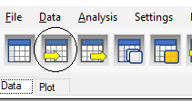
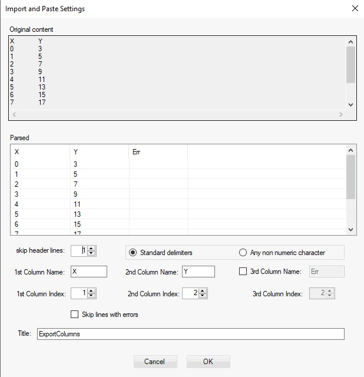

Import Data from File
To import data from file choose File > Import ASCII f rom the menu or click on the Import data from ASCII File button:

You can also use Ctrl+I keys. This will show a file open dialog. Select the file and click Ok button. The import data dialog will be shown:

The first area shows the original content. The second one shows how the data is parsed. Standard delimiters are used to identify columns: space, return, coma, semicolons, colons, tabs.
By default the column names are initialized with ‘X’, ‘Y’ and ‘Err’ names. Change the number of header lines to skip so that there are no non-numeric entries in data columns. Internally LybraFit tries to automatically detect the header lines.
This will also reset the column names if they are defined in the original file on the line just before the numeric data:
You can enter new names for the columns. Using 1st Column index” and “2nd Column Index” you can rearrange data columns. Remember that 1st column is always the function argument and second one will be the function value.
By default title is set to the file name but you can use the edit box Title to change it. If there is third column in the file the Err column is also enabled. Click Ok to import data. If data is not in proper format an error message will be displayed indicating line number of wrong data and the import will be canceled. To disable the error message and automatically skip those lines check the ‘Skip lines with errors’.
Import Data from clipboard
The same way data can be imported from the clipboard. For this choose Data > Import from clipboard from the menu or click on the Import from clipboard icon:.
You can also use Ctrl+J keys